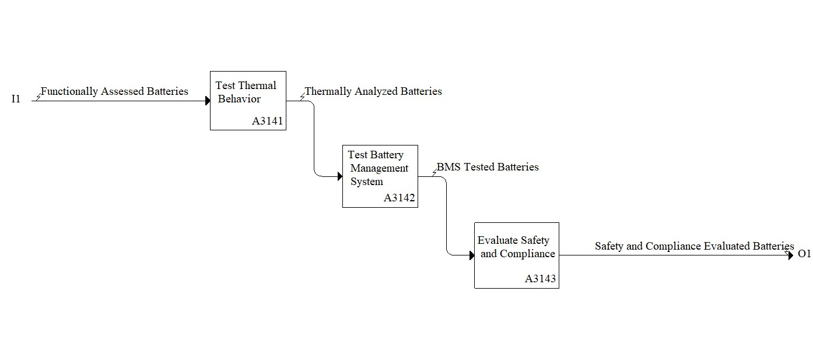

Model: Test Battery with Battery Management System

Description
Notes:
None
Definitions:
See A3142.
Standards:
IEC 62133-2:2017, Secondary cells and batteries containing alkaline or other non-acid electrolytes - Safety requirements for portable sealed secondary cells, and for batteries made from them, for use in portable applications - Part 2: Lithium systems
UL 1974, Evaluation for Repurposing or Remanufacturing Batteries
UL 1642, Certification of Lithium-ion Battery
ISO 12405-1:2011, Electrically propelled road vehicles - Test specification for lithium-ion traction battery packs and systems - Part 1: High-power applications
References:
Chung HC (2021) Charge and discharge profiles of repurposed LiFePO4 batteries based on the UL 1974 standard. Scientific Data, 8(1), 165. https://doi.org/10.1038/s41597-021-00954-3
Kehl D, Jennert T, Lienesch F, Kurrat M (2021) Electrical characterization of Li-ion battery modules for second-life applications. Batteries, 7(2), 32. https://doi.org/10.3390/batteries7020032
Michelini E, Höschele P, Abbas SM, Ellersdorfer C, Moser J (2023) Assessment of health indicators to detect the aging state of commercial second-life lithium-ion battery cells through basic electrochemical cycling. Batteries, 9(11), 542. https://doi.org/10.3390/batteries9110542
Murphy L, Crawford C (2025) Data-driven classification of lithium-ion batteries for second-life applications. Journal of Energy Storage, 133, 117994. https://doi.org/10.1016/j.est.2025.117994
Svensson D, Särnevång A (2024) Inspection and Evaluation Method to Repurpose Used Batteries. http://hdl.handle.net/20.500.12380/308820